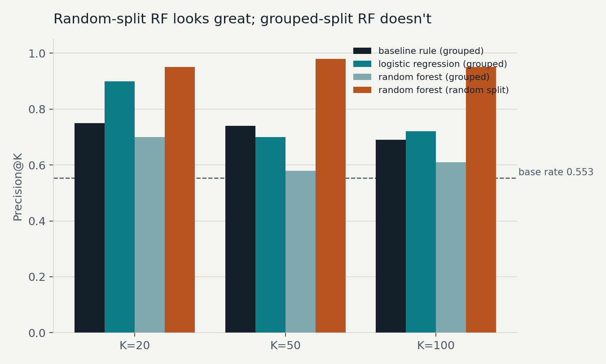
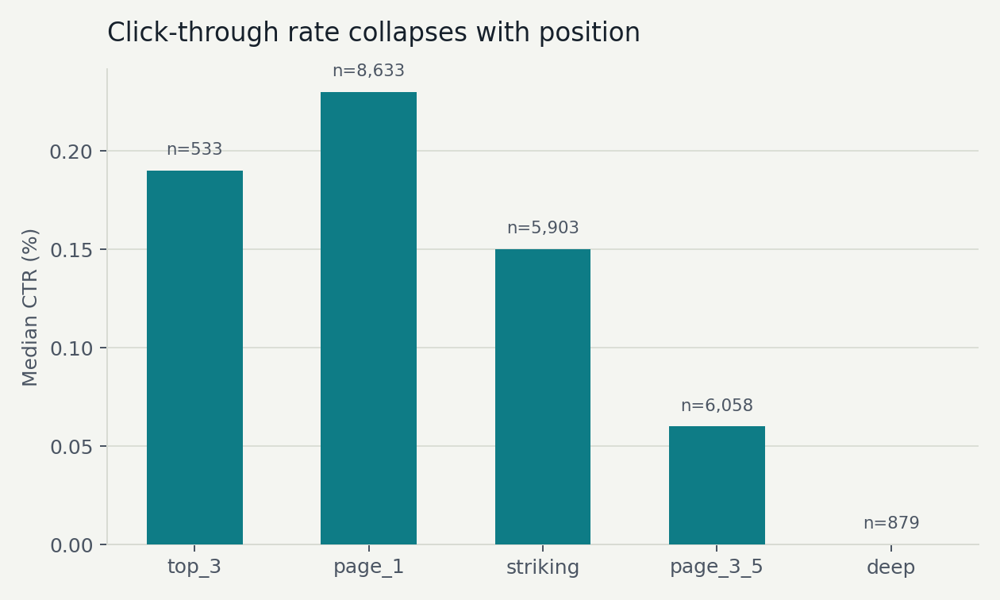
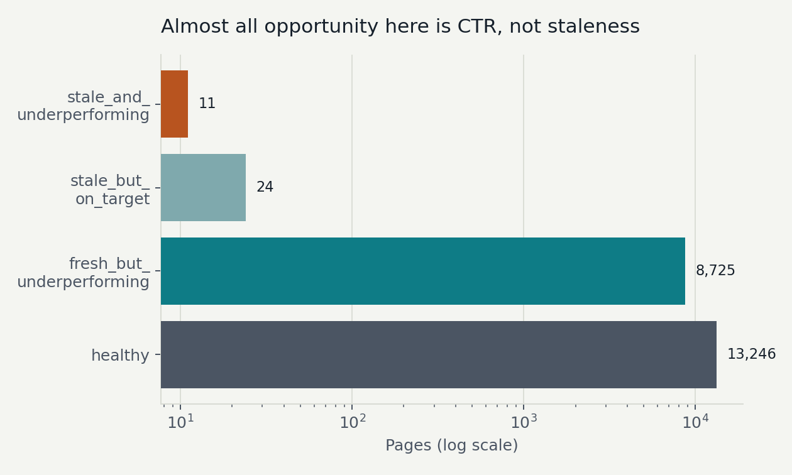

Abstract
Question: can a page's staleness and click-through gap against its own search position identify which content is worth reviewing first? Data: 30,000 pseudonymized content pages across 32 clients from FlyRank's internship starter release, narrowed to 22,006 pages with enough measured search volume and position data to trust. Method: a transparent hand-written baseline rule, evaluated against Logistic Regression and Random Forest under a client-grouped validation split, with a full leakage audit run against the final feature set. Headline result: the baseline rule matched or beat both trained models at precision@50 and precision@100, and Logistic Regression only edged it out at precision@20 (0.90 vs 0.75) — while Random Forest's apparently strong 0.95–0.98 precision under a naive random split collapsed to 0.58–0.70 once the split respected client boundaries. What it's for: a ranked, human-reviewed starting list for content teams deciding which pages to refresh first — decision-support, not an automated ranking authority.
The decision this supports
A content team with a few thousand live pages and limited editorial hours needs to answer one question every month: which pages do we refresh first? Guessing by gut feel means the loudest client or the most recently complained-about page wins, not necessarily the page actually losing the most search visibility.
FlyRank's own March 2026 portfolio study (341,701 pages, 57 brands) found refresh timing to be one of the strongest measured levers available — 365+ day content refreshed within 30 days showed a 3.2× health boost and 57× more impressions in their sample. That finding motivates the question this capstone actually tests at a smaller scale, with full control over the label, the split, and the leakage checks: does a simple, auditable rule do the job well enough that a model needs to earn the right to replace it?
Data
Source: content_refresh_anonymized.csv, the FlyRank ML internship starter release — 30,000 rows, 44 columns, one pseudonymized content item per row, 32 clients, trailing-90-day search and analytics metrics.
| Cut | n | Why |
|---|---|---|
| Full starter release | 30,000 | Base population |
| Excluded — no reliable position or under the volume floor | 7,994 (26.6%) | Position unknown or impressions_90d<100 — too thin to trust a CTR or position signal |
| Scored population (this paper) | 22,006 (73.4%) | Every number below is scoped to this slice |
All content_id and client_id values are pseudonymized hashes; no client names, URLs, or private queries appear anywhere in this paper or its source notebooks.
Methodology
Label
is_declining_label = 1 where trend_direction == 'down' (a 30-day-vs-previous-30-day impression comparison, >10% decline). Base rate on the scored population: 59.8% overall, 55.3% on the held-out grouped-split test set.
The leakage trap this study caught
Six columns — impressions_last_30d, impressions_prev_30d, clicks_last_30d, clicks_prev_30d, sessions_last_30d, sessions_prev_30d — turned out to be the literal inputs the label is computed from (trend_pct correlates 1.000000 with the pct-change of impressions_last_30d vs impressions_prev_30d). Training with them included pushed AUC to 0.9586; removing them dropped it to 0.7172 — the textbook "collapse toward 0.7" confession of label leakage. All models in this paper exclude these six columns plus trend_direction/trend_pct themselves.
Baseline rule
Plain words: a page is worth reviewing if it hasn't been touched in a while AND its click-through rate is falling well short of what pages in its search position normally get. Score = 50% staleness (days since last update, capped at a year) + 50% CTR gap against the page's position-tier benchmark, hand-weighted — no fitted coefficients. Rows scoring ≥30 get reason code stale_ctr_underperformer.
Models
Logistic Regression and Random Forest, both trained on the same 22,006-row population, same feature set (23 numeric + 9 categorical columns, one-hot encoded), predicting probability of decline — evaluated by precision@K, since this is a ranking question, not a classification one.
Validation design
Split by client_id using GroupShuffleSplit (24 train clients / 6 test clients, zero overlap) — not a random row split, because pages from the same client share hidden structure (a random split let 28 of 28 test clients also appear in training, letting Random Forest partly memorize client-level patterns instead of learning anything general).
Results

| K | base rate | baseline rule | logistic reg. | random forest |
|---|---|---|---|---|
| 20 | 0.553 | 0.75 | 0.90 | 0.70 |
| 50 | 0.553 | 0.74 | 0.70 | 0.58 |
| 100 | 0.553 | 0.69 | 0.72 | 0.61 |
All three numbers are computed on the same client-grouped test split, in the same notebook run, next to the same base rate — the comparison the training-honest-models discipline calls non-negotiable.


What this cannot claim
- Small test set. The grouped split holds out only 6 clients. Which 6 land in test can swing the numbers — this is disclosed, not smoothed over.
- Scoped population. All results describe the 73.4% of pages with enough volume and position data to score; the excluded 26.6% are unaddressed.
- Client-batch artifacts. Several top-ranked pages within one client share an identical days_since_last_update — a bulk platform timestamp, not independent evidence each page individually decayed. A human reviewer should sample across clients, not batch-action one client's whole block.
- Trend-independent scoring. The rule and models never see trend_direction as a feature (by design, to avoid leakage) — so a small number of flagged pages are, on inspection, not actually declining by the label (stable-trend pages with low CTR and high staleness still score high). That's expected behavior, not a bug, but worth a human's second look.
- One provider's data. This paper's ML section covers the 30,000-row starter release; findings are not claimed to generalize beyond it without re-validation.
The action playbook
| Archetype | n | Action | Reason code |
|---|---|---|---|
| stale_and_underperforming | 11 | refresh_priority | stale_ctr_underperformer |
| fresh_but_underperforming | 8,725 | fix_ctr_snippet | ctr_gap_only |
| stale_but_on_target | 24 | refresh_optional | staleness_only |
| healthy | 13,246 | monitor | none |
Ranking method used for the queue: the baseline rule, not a trained model — it matched or beat both LR and RF at K=50/K=100 under the honest split, and is fully auditable by a human reading one formula.
Monitoring triggers: re-check the archetype distribution monthly; re-run precision@K against realized 30/60-day outcomes on refreshed pages; re-run the grouped-split evaluation if the client roster changes meaningfully. Retrain quarterly, or immediately if measured precision@50 drifts toward the 0.55 base rate.
Reproducibility
- github.com/Purvansh09/flyrannk_week1
- work/notebooks/w04_baseline_score.ipynb — baseline rule + signal audit
- work/notebooks/w05_model.ipynb — Logistic Regression + Random Forest
- work/notebooks/w06_validation_audit.ipynb — leakage audit, grouped-split before/after
- work/notebooks/w07_action_playbook.ipynb — archetypes, ranked queue, exports
Random seed fixed at random_state=42 throughout. scikit-learn 1.8.0. Open any notebook via the Colab badge at the top of the file and Runtime → Run All; outputs regenerate in work/outputs/ (gitignored by design — the CI leak-guard blocks committed data files) and metrics land in committed JSON receipts in the same folder.
Data credit
Built on the FlyRank ML Internship dataset. flyrank.ai
Additional context drawn from FlyRank's public report, The State of AI-Driven SEO (March 2026) — cited in the Introduction and Limitations, not reproduced verbatim.